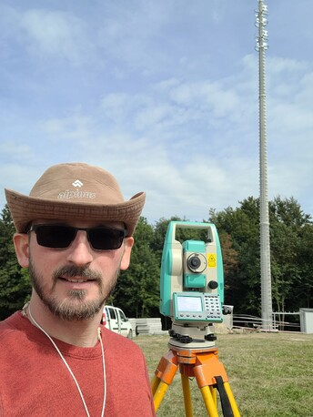

Usługi geodezyjne Powiat Leski (Lesko, Solina, Polańczyk, Baligród, Cisna, Olszanica)
Obsługujemy inwestorów budujących domki rekreacyjne, pensjonaty, domy całoroczne i przyłącza wokół Jeziora Solińskiego oraz w pasmach górskich powiatu leskiego.

Pomiary na trudnych terenach górskich i zdalna obsługa inwestycji w Bieszczadach
Realizacja inwestycji w gminach Solina (Polańczyk, Solina, Wołkowyja, Bukowiec, Myczków, Myczkowce, Bóbrka, Berezka, Zawóz, Werlas, Terka), Cisna (Wetlina, Smerek, Przysłup, Kalnica, Strzebowiska, Dołżyca), Baligród (Jabłonki, Bystre, Zahoczewie, Mchawa, Stężnica), Lesko (Hoczew, Huzele, Bezmiechowa Dolna, Bezmiechowa Górna, Średnia Wieś, Łączki, Manasterzec) oraz Olszanica (Uherce Mineralne, Orelec, Stefkowa, Wańkowa, Rudenka, Paszowa, Zwierzyń) wymaga doświadczenia w terenie górskim. Wykonujemy pełną obsługę bez konieczności przyjazdu właściciela działki z drugiego końca Polski.
Inwestor spoza regionu nie musi przyjeżdżać na miejsce
Kupiłeś działkę nad Soliną lub w Cisnej mieszkając w Warszawie, Krakowie czy Rzeszowie? Wszystkie formalności w ODGiK w Lesku, pomiary w terenie oraz wysyłkę gotowych map DWG/DXF bezpośrednio do Twojego architekta załatwiamy zdalnie.
Precyzyjne ustalanie zatartych granic działek i podziały
Wznawiamy i ustalamy przebieg granic działek położonych w lesie, na stromych zboczach oraz w pobliżu górskich potoków. Przeprowadzamy podziały nieruchomości pod osady domków rekreacyjnych i inwestycje turystyczne.
Mapy do celów projektowych z dokładną rzeźbą terenu
Przy budowie na skarpach i zboczach kluczowe znaczenie dla konstruktora ma gęsta siatka pikiet wysokościowych i warstwice. Przygotowujemy precyzyjne MDCP uwzględniające rzeczywiste spadki terenu i skarpy.
Tyczenie zespołów domków, pensjonatów i przyłączy
Wytyczamy pojedyncze domy oraz całe kompleksy domków letniskowych, studnie głębinowe, przydomowe oczyszczalnie ścieków, przyłącza energetyczne i wykonujemy końcowe inwentaryzacje powykonawcze do PINB w Lesku.